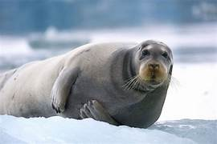
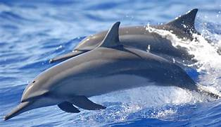

MARINE MAMMALS
1.Bearded Seal
2.Beluga Whale
3.Polar Bear
4.Harp SEAL
5.California Sea Lion
6.Common Bottlenose Dolphin
7.Dugong
8.Minke Whale
9.Spinner Dolphin
10.Sea Otter
1.BEARDED SEAL

The bearded seal is the largest of all Arctic seals, growing to lengths of up to eight feet and weighing 575-800 pounds. These seals tend
to weigh the most during winter and early spring when they have an extra layer of blubber under the skin.
2.BELUGA WHALE
Belugas, however, are typically more solidly white than their grayish cousins. Adult belugas are also slightly larger than narwhals,
reaching lengths of around 18 feet (5.5 m).Belugas can move their heads up and down and from side to side.
3.POLAR BEAR

Polar bears are aggressive predators, known for taking a variety of prey. They spend most of the year associated with Arctic sea ice,
where they hunt ringed seal and bearded seal pups. Polar bears have an excellent sense of smell.
4.HARP SEAL
Harp seals are foraging predators that eat several dozen species of bony fishes and invertebrates. They will eat just about anything they can catch.
Juveniles eat krill and other pelagic crustaceans, and the diet diversifies as they grow.
5.CALIFORNIA SEA LION
Adult California sea lion females have tan fur, while males have dark brown fur. Females grow to a maximum length of 6.5 feet (2 m) and weigh 242.5 pounds.
Males are three to four times larger than females, growing to a maximum length of 8.4 feet (2.5 m) and weight of 1,153 pounds (523 kg).1
6.COMMON BOTTLENOSE DOLPHIN
Coastal populations of common bottlenose dolphins are more territorial and utilize a larger number of coastal habitats – from bays and estuaries to seagrass beds,
beaches, and other ecosystems. Oceanic populations are more migratory in nature and apparently do not visit coastal ecosystems.
7.DUGONG
The dugong, like all sea cows, is herbivorous. It primarily grazes on sea grasses and therefore spends most of its time in sea grass beds. Unlike the closely related manatees,
the dugong never enters freshwater and is therefore the only exclusively marine mammal that is herbivorous.
8.MINKEWHALE
“Minke whale” refers to two existing species: the northern, or common, minke whale and the Antarctic minke Minke whales are the most common of the great whale species,
and can be found throughout the world’s oceans.
9.SPINNER DOLPHIN

This species feeds on schooling, mesopelagic fishes and squids in the open ocean. Like their prey, spinner dolphins form large groups – typically composed
of hundreds or even thousands of individuals – for hunting and socializing. Spinner dolphins are known for being quite playful and put on impressive aerial
displays,breaching and spinning regularly.
10.SEA OTTER

The charismatic sea otter is one of the most well-known marine mammals today. The largest member of the weasel family, they can grow to be nearly 5 feet long and
weigh almost 100 pounds.They spend nearly their entire life in the ocean in the temperate coastal waters on the Pacific Coast and have a close relationship with help
forest habitats along the North American coast.